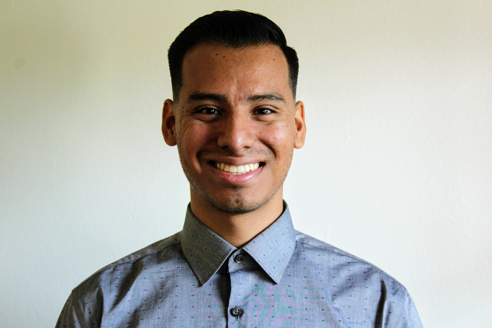

About
Greetings! My name is Eric Palma and I am junior software engineer with a passion for learning and continously improving. I earned a Minor in Computer Science while in college which gave me a solid foundation in software development principles, however for the most part I am a self taught programmer. Currently my goal is to start a career as an iOS developer, and to help me achieve this I have recently developed my first iOS app which can be viewed below.
 GitHub
GitHub LinkedIn
LinkedIn
